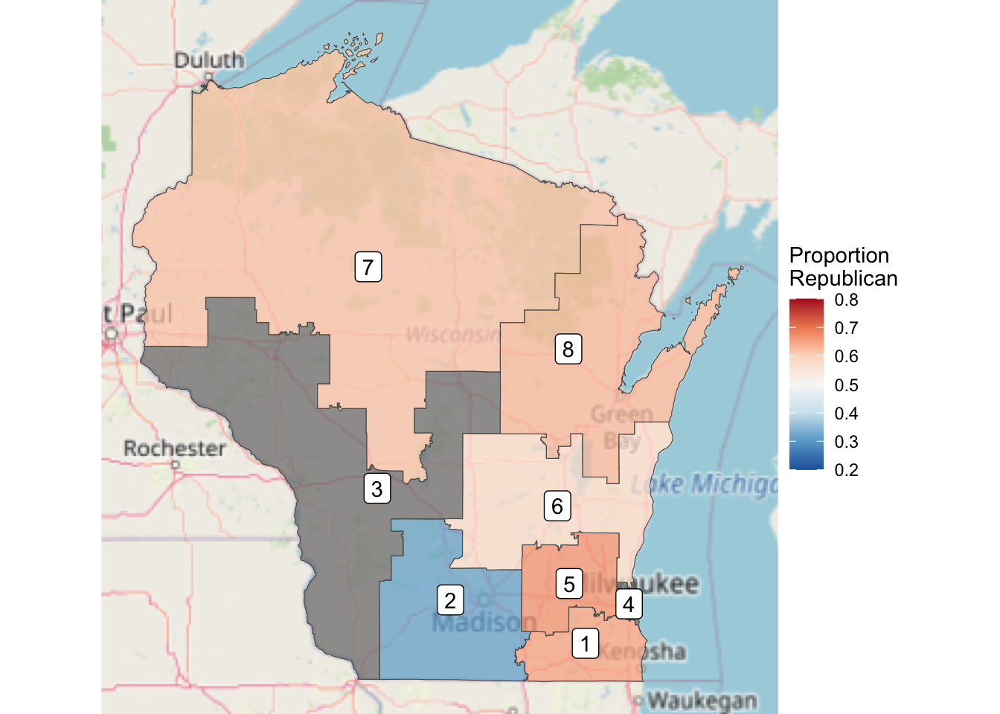

── Attaching core tidyverse packages ──────────────────────── tidyverse 2.0.0 ──
✔ dplyr 1.1.4 ✔ readr 2.1.5
✔ forcats 1.0.0 ✔ stringr 1.5.1
✔ ggplot2 3.4.4 ✔ tibble 3.2.1
✔ lubridate 1.9.3 ✔ tidyr 1.3.1
✔ purrr 1.0.2
── Conflicts ────────────────────────────────────────── tidyverse_conflicts() ──
✖ dplyr::filter() masks stats::filter()
✖ dplyr::lag() masks stats::lag()
ℹ Use the conflicted package (<http://conflicted.r-lib.org/>) to force all conflicts to become errors
Linking to GEOS 3.11.0, GDAL 3.5.3, PROJ 9.1.0; sf_use_s2() is TRUE
Loading required package: maps
Attaching package: 'maps'
The following object is masked from 'package:purrr':
mapWisconsin Gerrymandering Map
Introduction
Recently, the state of Wisconsin announced the redrawing of its legislative maps after a decade of guaranteed Republican control of the state legislature. This control was due to extreme gerrymandering that made it impossible for Democrats to have control in the state legislature. But, with the redrawing of districts, Wisconsin hopes to create districts that better reflect the true voting habits of its voters. For this project, we will be revisiting the old district lines of Wisconsin to see just how gerrymandered the state was. With this, we can see the necessity for change in Wisconsin’s district lines and also the dangers of gerrymandering as a whole. To do this, we will use the data set results_house from the fec16 library along with a projection map of Wisconsin’s districts.
results_house <- results_house |>
mutate(district = parse_number(district_id)) |>
group_by(state, district) |>
summarize(candidates = n(),
total_votes = sum(general_votes, na.rm = TRUE),
d_votes = sum(ifelse(party == "DEM", general_votes, 0), na.rm = TRUE),
r_votes = sum(ifelse(party == "REP", general_votes, 0), na.rm = TRUE),
.groups = "drop",
r_prop = r_votes/total_votes,
winner = ifelse(d_votes > r_votes, "Democrat", "Republican"))wis_results <- results_house |>
filter(state == "WI") wis_merged <- wis_dist |>
st_transform(4326) |>
inner_join(wis_results, by = c("DISTRICT" = "district"))
head(wis_merged, width = Inf)wisconsin_map <- ggplot(data = wis_merged, aes(fill = winner)) +
annotation_map_tile(zoom = 6, type = "osm", progress = "none") +
geom_sf(alpha = .75) +
scale_fill_manual("Winner", values = c("blue", "red")) +
geom_sf_label(aes(label = DISTRICT), fill = "white") +
theme_void()
wisconsin_mapWarning in st_point_on_surface.sfc(sf::st_zm(x)): st_point_on_surface may not
give correct results for longitude/latitude dataLoading required namespace: raster wisconsin_map +
aes(fill = r_prop) +
scale_fill_distiller(
"Proportion\nRepublican",
palette = "RdBu",
limits = c(0.2, 0.8))Scale for fill is already present.
Adding another scale for fill, which will replace the existing scale.Warning in st_point_on_surface.sfc(sf::st_zm(x)): st_point_on_surface may not
give correct results for longitude/latitude data
Analysis
With the overlay of the district on a map of Wisconsin, we can see how the gerrymandered lines operated. We can see this in the way lines were drawn in Milwaukee and Madison, Wisconsin’s two largest and most democratic cities. In Zone 4, we see how an incredibly dense part of Milwaukee’s population, a great majority of which are Democrat, is grouped into a tiny district. Because of this, the surrounding zones incorporating the Milwaukee area ensure Republicans have more power in their vote as a high concentration of Democratic voters find themselves in Zone 4 and not part of the other districts. Simiarlarly, Districts 2 and 3 employ similar strategies by clumping together a high volume of Democratic voters in Madison and Wisconsin’s western border into two districts to ensure easy wins for Democrats. With a majority of Democratic voters in only three districts, Wisconsin Republicans have, in essence, free paths to victory in the other five districts. Thus, the old district lines of Wisconsin ensured that the districts would always be 5 - 3 in favor of Republicans, a clear representation of the abuses of power gerrymandering can pose to the Democratic process. Wisconsin’s new districts lines provides hope for the future of the Democratic process in the state, which, as we can see in this map, has needed to change for a decade.